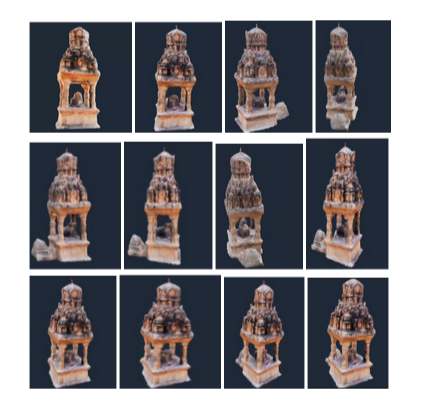
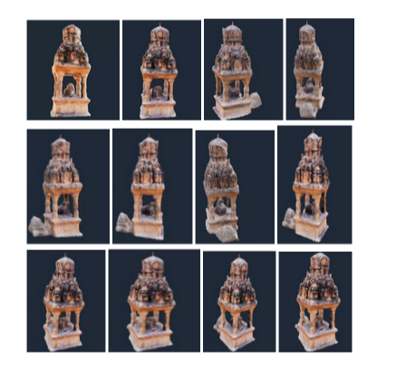

A Generative Approach to High Fidelity 3D Reconstruction from Text Data

Abstract
The convergence of generative artificial intelligence and advanced computer vision technologies introduces a groundbreaking approach to transforming textual descriptions into three-dimensional representations. This research proposes a fully automated pipeline that seamlessly integrates text-to-image generation, various image processing techniques, and deep learning methods for reflection removal and 3D reconstruction. By leveraging state-of-the-art generative models like Stable Diffusion, the methodology translates natural language inputs into detailed 3D models through a multi-stage workflow.
The reconstruction process begins with the generation of high-quality images from textual prompts, followed by enhancement by a reinforcement learning agent and reflection removal using the Stable Delight model. Advanced image upscaling and background removal techniques are then applied to further enhance visual fidelity. These refined two-dimensional representations are subsequently transformed into volumetric 3D models using sophisticated machine learning algorithms, capturing intricate spatial relationships and geometric characteristics. This process achieves a highly structured and detailed output, ensuring that the final 3D models reflect both semantic accuracy and geometric precision.
This approach addresses key challenges in generative reconstruction, such as maintaining semantic coherence, managing geometric complexity, and preserving detailed visual information. Comprehensive experimental evaluations will assess reconstruction quality, semantic accuracy, and geometric fidelity across diverse domains and varying levels of complexity. By demonstrating the potential of AI-driven 3D reconstruction techniques, this research offers significant implications for fields such as augmented reality (AR), virtual reality (VR), and digital content creation.
Experimental Results
 
